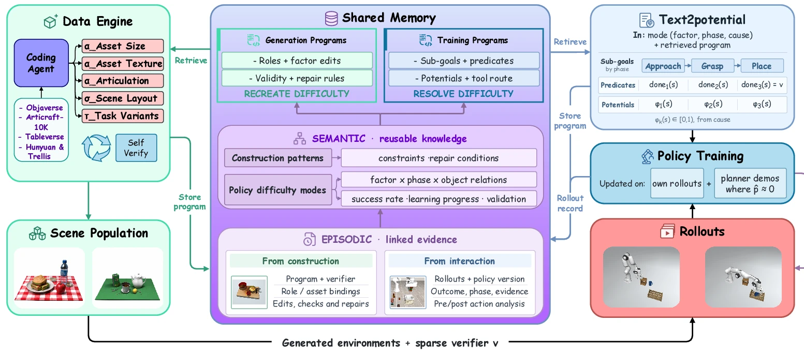
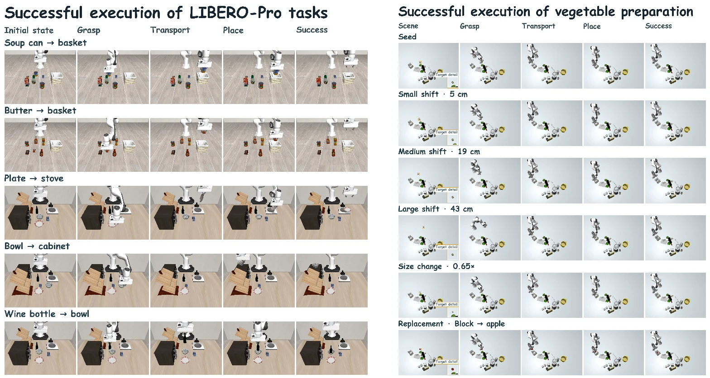
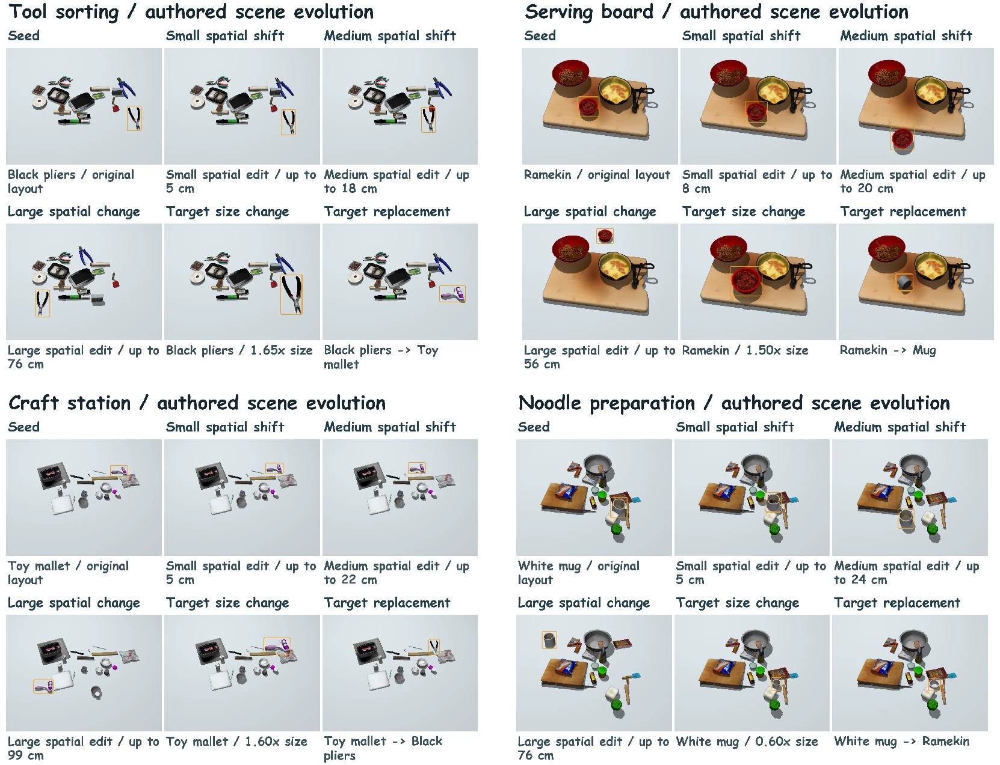
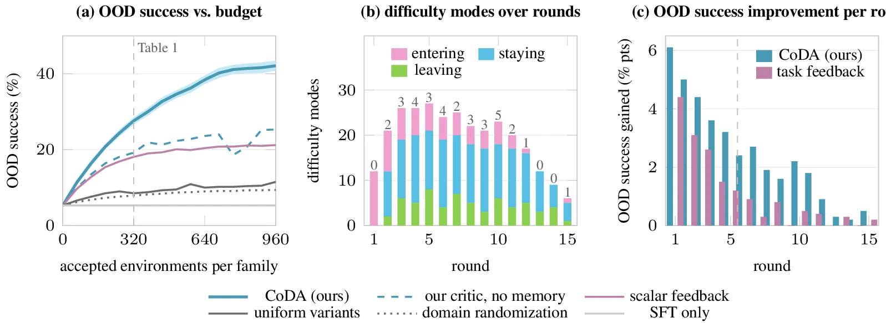

TL;DR: CoDA closes the loop between generative simulation and robot policy learning. A simulation data engine and an action policy co-evolve through a shared heterogeneous memory: validated failure diagnoses become programs that recreate a difficulty and programs that help the policy overcome it, and Text2potential turns those diagnoses into dense, policy-preserving value targets.
CoDA: Co-Evolution of Data Engines and Action Policies
Under Review
Method
Generative simulation has made environments plentiful: coding agents synthesize scenes, articulations, and task specifications, and language models author their rewards. The open question is which environments to build next and what supervision will help the policy learn from them. Existing engines sample variation from hand-specified ranges, refine a scene until it is physically valid, or allocate budget by per-task success rate. None of these signals measures how much the policy actually improves through training, so a generator risks spending its budget on environments the policy has already mastered or cannot yet learn to solve. CoDA couples scene generation and policy learning through a shared memory that guides both.

The CoDA framework. The data engine generates executable scenes with independently editable task, spatial, and object-attribute factors and a sparse success verifier. Construction traces and rollout-grounded failure diagnoses enter a shared memory, which organizes them into reusable difficulty modes. Validated modes compile into generation programs that reproduce the diagnosed conditions and training programs that specify subgoals, potentials, and learning tools. Text2potential supplies dense feedback through chunk-level value targets, and measured learning progress guides the next round.
Factored scene programs
The data engine is a tool-augmented coding agent that writes executable scene programs against a simulator SDK. Each environment is parameterized as s = (τ, σ, α): the task factor τ (goal predicate, instruction, initial and terminal object states), the object-spatial factor σ (poses, support and containment, clearances, occlusion), and the object self-attribute factor α (geometry, scale, mass, friction, articulation, appearance). Any one factor can be resampled while the other two stay fixed, so the critic's diagnoses, the engine's interventions, and the conditions for applying compiled programs all share one representation. Every program emits a sparse, machine-checkable success predicate ν, and scenes must pass collision, stability, and metric-scale checks before any policy rollout.
Shared heterogeneous memory
The memory combines the engine's construction and repair traces with the policy's rollout outcomes and failure diagnoses, organized into three tiers. The episodic tier records each scene program, its verifier, the full generation trace, success rates, learning progress, and a failure diagnosis from a vision–language critic that names the attributed factor, the trajectory phase, a cause, and supporting evidence. The semantic tier clusters these records into reusable difficulty modes — such as “an occluder adjacent to the target on the approach side” — each characterized by its hardness (policy success rate) and importance (learning progress from training on it). The procedural tier compiles each validated mode into two complementary programs: generation programs that recreate and vary the diagnosed conditions over symbolic object roles, and training programs that specify subgoal decompositions, potentials, and learning tools.
Memory-guided scene generation
Each round allocates the generation budget across difficulty modes with an upper-confidence rule over hardness and learning progress, reserving a fraction for novel environments and a replay fraction to catch regressions. For each diagnosis tied to a scene factor, the engine generates a targeted batch that varies the identified factor and a control batch that varies a different one. A difficulty mode is compiled into programs only if the targeted variants yield lower policy success than the controls, so every stored diagnosis is tested rather than taken on the critic's word. Because generation programs refer to symbolic roles such as target, obstacle, or support, they transfer across task families by binding those roles to objects in a new scene.
Text2potential
The success predicate ν says whether a task is complete but gives little feedback on intermediate progress, which makes value learning slow on long-horizon tasks. Text2potential compiles a validated failure diagnosis into a sequence of subgoals split at the diagnosed phase, each with a completion predicate donek(s) and a progress potential φk(s) ∈ [0, 1) over simulator state, with the final predicate equal to the task verifier. These are combined into a staged potential
Φ(s) = k*(s) + φk*(s)(s), k*(s) = |{k : donek(s)}|
where the diagnosed phase guides the decomposition and the diagnosed cause guides the potentials. Unlike free-form reward synthesis, the potential shapes the critic's targets rather than replacing the task reward. Emitted programs are executed before use, and a potential that does not speed up value-critic convergence sends the diagnosis back for revision.
Policy training with shaped chunk values
The policy emits action chunks that execute open-loop. A value critic over chunks is trained with an h-step temporal-difference target under potential-based shaping, where the shaping term telescopes so that the potential needs to be evaluated only at a chunk's endpoints. During data collection, several candidate chunks are sampled and blended by their critic scores; the policy is then updated by advantage-weighted regression, which reweights the policy's own supervised action loss and therefore applies equally to discrete, flow-matching, and diffusion policies. For a fixed, bounded potential, shaping shifts action and state values by the same −Φ(s), leaving advantages — and the optimal policy — unchanged. The potential is used only during training; at deployment the policy acts from observations and the instruction alone.
Qualitative Results

Successful rollouts. Left: pre-defined LIBERO-Pro tasks. Right: scenes evolved by CoDA, one row per variant (spatial shifts of 5, 19, and 43 cm, a size change, and a target replacement). Columns show the initial state, grasp, transport, place, and success. Despite changes in object position, size, and identity, the policy follows the subgoal sequence encoded by the staged potential.

Scene variations generated by CoDA. For tool sorting, serving-board arrangement, craft-station organization, and noodle preparation, each panel shows a seed scene, three spatial perturbations of increasing magnitude, a target-size change, and a target-object replacement. All displayed variants pass the scene-validity checks.
Quantitative Results
| Data generation | OOD by family | Average | ||||
|---|---|---|---|---|---|---|
| Pick-place | Articulated | Put-inside | Stack/insert | In | OOD | |
| π0.5 pretrained, zero-shot | 3.1 ± 0.6 | 1.6 ± 0.5 | 2.7 ± 0.6 | 1.8 ± 0.6 | 3.4 ± 0.2 | 2.3 ± 0.3 |
| + seed demonstrations (SFT) | 6.4 ± 0.6 | 4.7 ± 0.4 | 5.9 ± 0.5 | 4.2 ± 0.4 | 11.7 ± 0.4 | 5.3 ± 0.3 |
| Domain randomization | 8.8 ± 0.4 | 8.3 ± 0.6 | 7.6 ± 0.4 | 6.9 ± 0.5 | 17.2 ± 0.3 | 7.9 ± 0.4 |
| Uniform variants (SimFoundry) | 10.6 ± 0.4 | 6.9 ± 0.6 | 9.7 ± 0.4 | 6.8 ± 0.3 | 21.6 ± 0.3 | 8.5 ± 0.2 |
| Scalar-feedback co-evolution (SimWorld Studio) | 20.9 ± 0.7 | 15.3 ± 0.7 | 19.6 ± 1.2 | 16.6 ± 0.7 | 33.8 ± 0.4 | 18.1 ± 0.5 |
| Our critic, no memory | 22.4 ± 0.7 | 17.8 ± 0.9 | 18.3 ± 1.3 | 18.3 ± 0.8 | 31.7 ± 0.6 | 19.2 ± 0.7 |
| CoDA (ours) | 33.1 ± 1.2 | 24.7 ± 0.9 | 28.9 ± 1.3 | 23.7 ± 1.0 | 39.4 ± 0.5 | 27.6 ± 0.6 |
With the same generation budget, CoDA exceeds generation guided by task success rates by 9.5 points and our critic without memory by 8.4 points. Extending the loop from five to fifteen rounds raises OOD success further, from 27.6% to 42.1%. In is success on each generator's own distribution; values are mean ± standard error over three seeds with the π0.5 backbone. Best and second best highlighted.
| Method | Std. LIBERO | Object | Goal | Spatial | Overall | ||||
|---|---|---|---|---|---|---|---|---|---|
| Pos | Task | Pos | Task | Pos | Task | Pos | Task | ||
| OpenVLA | 0.765 | 0.00 | 0.00 | 0.00 | 0.00 | 0.00 | 0.00 | 0.00 | 0.00 |
| π0 | 0.942 | 0.00 | 0.00 | 0.00 | 0.00 | 0.00 | 0.00 | 0.00 | 0.00 |
| π0.5 | 0.971 | 0.17 | 0.01 | 0.38 | 0.00 | 0.20 | 0.01 | 0.25 | 0.01 |
| Human-written programs | — | 0.14 | 0.00 | 0.00 | 0.00 | 0.23 | 0.05 | 0.12 | 0.02 |
| ASPIRE (code-as-policy) | — | 0.98 | 0.95 | 0.81 | 0.45 | 0.51 | 0.60 | 0.77 | 0.67 |
| CoDA (π0.5), 5 rounds | 0.971 | 0.90 | 0.86 | 0.80 | 0.58 | 0.76 | 0.72 | 0.82 | 0.72 |
| CoDA (π0.5), 15 rounds | 0.974 | 0.91 | 0.88 | 0.83 | 0.64 | 0.78 | 0.76 | 0.84 | 0.76 |
Training on CoDA-generated variants of the LIBERO-Pro source tasks lifts overall success from 25% to 84% under position perturbations and from 1% to 76% under instruction perturbations, while standard LIBERO success is preserved (97.4% vs. 97.1%). Best and second best highlighted.

Ablations
Failure-diagnosis critic
| Critic | OOD success (%) ↑ | Refuted (%) ↓ | Human agr. (%) ↑ |
|---|---|---|---|
| Qwen3-VL-235B (open weights) | 24.9 ± 0.8 | 27.5 | 73.8 |
| InternVL3-78B (open weights) | 25.7 ± 0.7 | 24.1 | 76.3 |
| Claude Opus 5 | 26.1 ± 0.6 | 20.3 | 81.5 |
| GPT-5.5 (default) | 27.6 ± 0.5 | 18.2 | 82.4 |
Critics with lower human agreement produce more diagnoses that the control batches refute, yet every critic outperforms generation guided by task success rates — even Qwen3-VL-235B exceeds that baseline by 6.8 points. Best and second best highlighted.
Text2potential
| Training signal | OOD success (%) ↑ | Steps to 25% OOD (k) ↓ | Agreement (%) ↑ |
|---|---|---|---|
| Sparse verifier only (Φ ≡ 0) | 22.3 ± 0.8 | 31 | — |
| Potential from task description | 24.6 ± 0.7 | 29 | 95.3 |
| Free-form dense reward, not a potential | 23.5 ± 1.0 | 33 | 72.4 |
| Frozen actor: Q-weighted selection only | 21.4 ± 0.9 | — | 96.8 |
| Text2potential without refinement | 26.1 ± 0.6 | 27 | 95.9 |
| Text2potential (ours) | 27.6 ± 0.5 | 21 | 97.2 |
Text2potential reaches 25% OOD success in 21k policy updates versus 31k with sparse rewards alone — roughly 32% fewer updates. Deriving the potential from the failure diagnosis rather than the task description, refining it, and using the learned values to update the policy rather than only to select chunks each contribute to the gain. Best and second best highlighted.
BibTeX
@article{coda2026,
title={CoDA: Co-Evolution of Data Engines and Action Policies},
author={Anonymous},
journal={Under review},
year={2026}
}